Context
Governance gives the page a specific angle instead of repeating the navigation label.
Council / 01
Council opens as a clear government decision hub: what Forum offers, who it helps, why it matters, and which route to take first.
The first screen combines positioning, proof, primary action, and fast internal navigation, so people can act immediately or compare the rest of the council route with context.
Plain service hero
Select the closest route and Forum keeps the next step, proof, and follow-up expectation aligned with public service access.
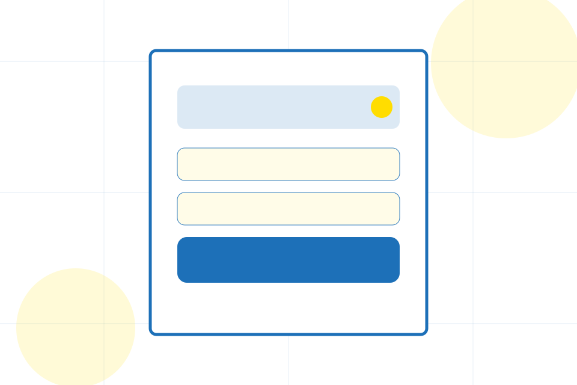
Council / 02
Organisation adds civic context to the council route, using the public service task flow structure to support public service access before visitors choose a next step.
Forum uses square service boxes and focused copy to make the decision easier to scan, aligning the section with public service access rather than filling space.
Explore CouncilOrganisation gives the page a specific angle instead of repeating the navigation label.
The square service boxes show what to compare, what to avoid, and what matters most for government, public sector & civic services visitors.
The final cue points to a useful internal route so the section keeps the journey moving.
Council / 03
Governance adds civic context to the council route, using the public service task flow structure to support public service access before visitors choose a next step.
Forum uses square service boxes and focused copy to make the decision easier to scan, aligning the section with public service access rather than filling space.
Explore Council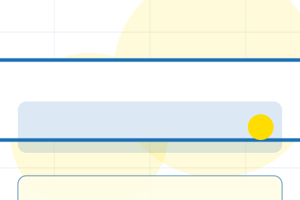
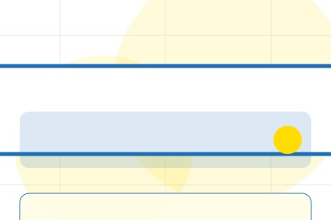
Governance gives the page a specific angle instead of repeating the navigation label.
Council / 04
Departments adds civic context to the council route, using the public service task flow structure to support public service access before visitors choose a next step.
Forum uses square service boxes and focused copy to make the decision easier to scan, aligning the section with public service access rather than filling space.
Explore CouncilDepartments gives the page a specific angle instead of repeating the navigation label.
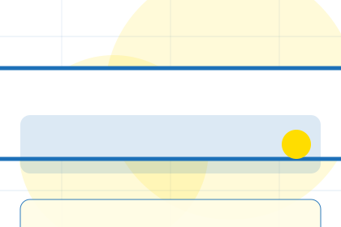
The square service boxes show what to compare, what to avoid, and what matters most for government, public sector & civic services visitors.
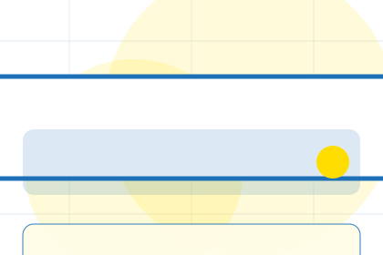
The final cue points to a useful internal route so the section keeps the journey moving.
Council / 05
Leaders adds civic context to the council route, using the public service task flow structure to support public service access before visitors choose a next step.
Forum uses square service boxes and focused copy to make the decision easier to scan, aligning the section with public service access rather than filling space.
Explore CouncilLeaders gives the page a specific angle instead of repeating the navigation label.
The square service boxes show what to compare, what to avoid, and what matters most for government, public sector & civic services visitors.
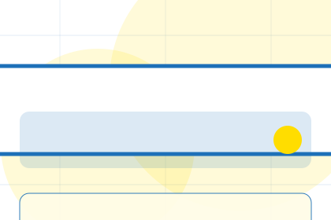
The final cue points to a useful internal route so the section keeps the journey moving.
Council / 06
Value adds civic context to the council route, using the public service task flow structure to support public service access before visitors choose a next step.
Forum uses square service boxes and focused copy to make the decision easier to scan, aligning the section with public service access rather than filling space.
Explore CouncilValue gives the page a specific angle instead of repeating the navigation label.
The square service boxes show what to compare, what to avoid, and what matters most for government, public sector & civic services visitors.
The final cue points to a useful internal route so the section keeps the journey moving.
Council / 07
Standards gives the proof layer for council: standards, evidence, and reassurance that make the next decision feel grounded.
Instead of relying on vague claims, Forum presents visible standards, process cues, and proof artifacts that help government visitors judge fit.
Explore CouncilVisible proof that helps visitors believe the claims behind standards.
The quality, safety, or operating expectation this section makes explicit.
What becomes clearer before someone decides whether to start a request.
Council / 08
Access adds civic context to the council route, using the public service task flow structure to support public service access before visitors choose a next step.
Forum uses square service boxes and focused copy to make the decision easier to scan, aligning the section with public service access rather than filling space.
Explore Council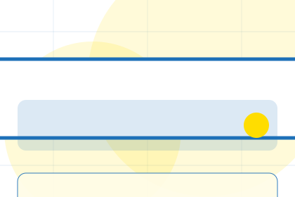
Access gives the page a specific angle instead of repeating the navigation label.
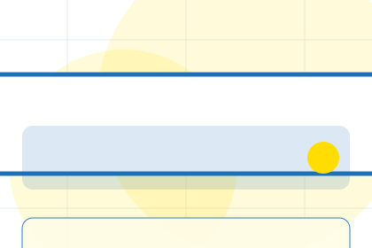
The square service boxes show what to compare, what to avoid, and what matters most for government, public sector & civic services visitors.
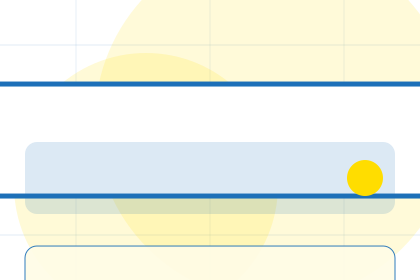
The final cue points to a useful internal route so the section keeps the journey moving.
Council / 09
Trust gives the proof layer for council: standards, evidence, and reassurance that make the next decision feel grounded.
Instead of relying on vague claims, Forum presents visible standards, process cues, and proof artifacts that help government visitors judge fit.
Explore CouncilVisible proof that helps visitors believe the claims behind trust.
The quality, safety, or operating expectation this section makes explicit.
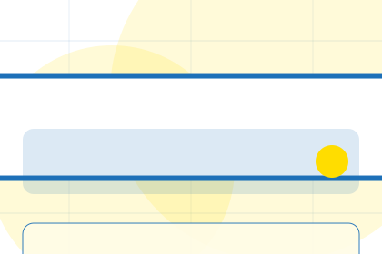
What becomes clearer before someone decides whether to start a request.
Council / 10
Forum closes the council route with a clear action, a quick reminder of the value, and a low-friction way to start a request.
Visitors who are ready can use the primary action. Visitors who are still comparing can scan the section links, proof, and support routes before they start a request.
Start RequestThe final block keeps the choice simple: act now, compare one more proof route, or send enough detail for a focused response.
Start Requestpublic service access
A civic service site with task-first pages, blue start buttons, form patterns, and accessibility-first structure. Council ends with a direct path to start a request, plus enough context for visitors who still need to compare.
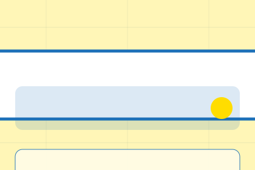
Start Request